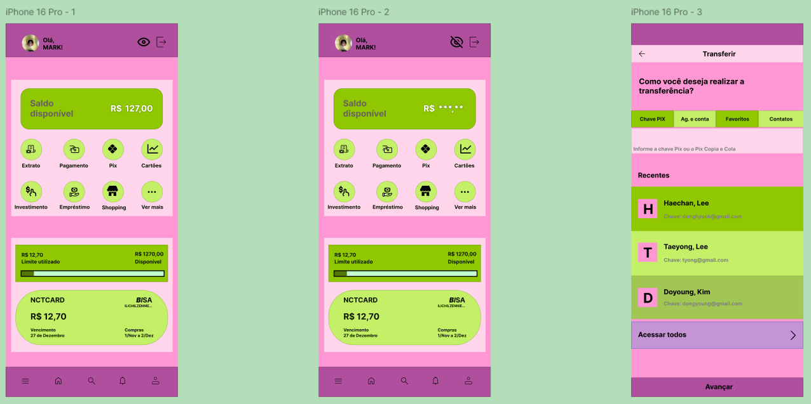

Trabalho de Design para Dispositivos Móveis

Durante a disciplina de Design para Dispositivos Móveis, utilizei o Figma para desenvolver o protótipo de um aplicativo bancário chamado 127Bank. O nome e a aparência do aplicativo fazem referência ao grupo de K-pop NCT 127.
No protótipo desenvolvido, trabalhei nas seguintes funcionalidades: ocultar ou revelar o saldo bancário, direcionar o usuário para área Pix, a partir de cliques nos respectivos ícones exibidos na tela inicial, bem como retornar à tela inicial ao clicar no ícone que representa a função Voltar.
O trabalho pode ser acessado e testado abaixo: